library(tidyverse) # Datenjudo
library(easystats) # Komfort
library(DataExplorer) # Data vis
library(ggpubr) # Data visoecd-yacsda
eda
datawrangling
vis
yacsda
R
Fallstudie: Explorative Datenanalyse zum Datensatz “OECD Wellbeing”
(YACSDA: Yet another Case Study on Data Analysis)
1 Grundlagen
Tip
Wenn Sie nicht mehr weiter wissen, googeln Sie nach dem Problem. Oder fragen Sie einen ChatBot, z.B. ChatGPT. \(\square\)
Important
Im Folgenden werden mitunter mehrere Lösungswege präsentiert. Sie können sich den Weg aussuchen, der Ihnen am besten gefällt. Sie müssen nicht alle Wege verstehen oder gar beherrschen. Einer reicht. \(\square\)
1.1 Hintergrund
In diesem Post untersuchen wir einige Aspekte der explorativen Datenanalyse für den Datensatz oecd wellbeing aus dem Jahr 2016.
Hinweis: Als Vertiefung gekennzeichnete Abschnitt sind nicht prüfungsrelevant.
1.2 Benötigte Pakete
Ein Standard-Paket zur grundlegenden Datenanalyse bzw. des Datenjudos ist tidyverse. Darüber hinaus verwenden wir noch zwei Pakete zur Visualisierung und eines für den Komfort.
1.3 Datensatz laden
Der Datensatz kann hier bezogen werden.
Doi: https://doi.org/10.1787/data-00707-en.
Falls der Datensatz lokal (auf Ihrem Rechner) vorliegt, können Sie ihn in gewohnter Manier importieren. Geben Sie dazu den Pfad zum Datensatz ein; bei mir sieht das so aus:
oecd <- read.csv("/Users/sebastiansaueruser/datasets/oecd_wellbeing.csv")Liegt die Datendatei im gleichen Verzeichnis wie Ihre R-/Quarto-/Rmd-Datei, dann brauchen Sie nur den Dateinamen, nicht den Pfad, anzugeben.
Alternativ können Sie die Daten direkt von einem Server beziehen:
oecd <- read.csv("https://raw.githubusercontent.com/sebastiansauer/2021-sose/master/data/OECD/oecd-wellbeing.csv")1.4 Erster Blick
glimpse(oecd)
#> Rows: 429
#> Columns: 15
#> $ Country <chr> "Australia", "Australia", "Australia", "Austr…
#> $ Region <chr> "New South Wales", "Victoria", "Queensland", …
#> $ region_type <chr> "country_part", "country_part", "country_part…
#> $ Code <chr> "AU1", "AU2", "AU3", "AU4", "AU5", "AU6", "AU…
#> $ Education <dbl> 8.0, 8.1, 7.8, 7.3, 7.6, 6.5, 8.1, 9.5, 8.8, …
#> $ Jobs <dbl> 8.1, 7.9, 8.1, 7.8, 8.8, 7.6, 8.7, 9.3, 7.8, …
#> $ Income <dbl> 6.8, 5.9, 6.3, 6.1, 7.9, 5.4, 8.2, 10.0, 5.7,…
#> $ Safety <dbl> 8.8, 9.5, 9.5, 9.0, 8.6, 8.8, 0.0, 10.0, 9.7,…
#> $ Health <dbl> 9.0, 9.5, 8.3, 8.5, 9.3, 5.4, 2.4, 9.3, 6.7, …
#> $ Environment <dbl> 9.8, 8.6, 9.9, 9.4, 9.6, 10.0, 9.2, 9.1, 3.5,…
#> $ Civic_engagement <dbl> 10.0, 10.0, 10.0, 10.0, 10.0, 10.0, 8.4, 10.0…
#> $ Accessiblity_to_services <dbl> 7.2, 7.5, 7.7, 7.2, 7.8, 6.8, 7.8, 8.7, 8.0, …
#> $ Housing <dbl> 7.2, 7.8, 8.3, 8.3, 8.9, 8.3, 5.6, 8.3, 6.1, …
#> $ Community <dbl> 8.9, 9.3, 8.6, 8.6, 8.5, 8.6, 10.0, 9.8, 8.3,…
#> $ Life_satisfaction <dbl> 7.8, 8.5, 8.1, 8.5, 7.8, 9.6, 7.0, 9.6, 7.8, …Wie glimpse() aufzeigt, liegen also einige qualitative (kategoriale, chr, vom Typ “Text”) und einige quantitative (metrische, dbl) Variablen vor. Die qualitativen Variablen sind für eine direkte Analyse weniger interessant; vielmehr ist es interessant, die Statistiken auf die Gruppen (Stufen, Level) der qualitativen Variablen aufzusplitten.
Betrachten wir aber zu Beginn die metrischen Variablen einzeln (univariat).
1.5 Deskriptive Statistiken zu den metrischen Variablen, einzeln (univariat)
Zentrale Statistiken zu den metrischen Variablen lassen sich auf mehreren Wegen mit R berechnen. Hier ist ein Weg:
describe_distribution(oecd)| Variable | Mean | SD | IQR | Min | Max | Skewness | Kurtosis | n | n_Missing |
|---|---|---|---|---|---|---|---|---|---|
| Education | 6.81 | 2.97 | 3.50 | 0 | 10 | -1.08 | -0.02 | 426 | 3 |
| Jobs | 6.45 | 2.41 | 2.90 | 0 | 10 | -0.96 | 0.48 | 429 | 0 |
| Income | 4.11 | 2.70 | 3.40 | 0 | 10 | 0.44 | -0.38 | 429 | 0 |
| Safety | 7.05 | 3.23 | 3.80 | 0 | 10 | -1.18 | 0.10 | 429 | 0 |
| Health | 5.73 | 2.93 | 5.20 | 0 | 10 | -0.33 | -1.15 | 429 | 0 |
| Environment | 5.40 | 2.73 | 4.35 | 0 | 10 | -0.11 | -0.89 | 429 | 0 |
| Civic_engagement | 5.05 | 2.85 | 4.10 | 0 | 10 | -0.03 | -0.91 | 429 | 0 |
| Accessiblity_to_services | 6.53 | 2.65 | 2.60 | 0 | 10 | -1.13 | 0.50 | 429 | 0 |
| Housing | 4.80 | 3.02 | 5.50 | 0 | 10 | -0.06 | -1.12 | 427 | 2 |
| Community | 6.88 | 2.75 | 3.25 | 0 | 10 | -1.13 | 0.32 | 425 | 4 |
| Life_satisfaction | 5.80 | 2.90 | 4.90 | 0 | 10 | -0.47 | -0.87 | 425 | 4 |
Jetzt gehen wir weiter zur Visualisierung der Verteilung der metrischen Variablen. Auch hier gibt es wieder viele Lösungen.
Es reicht, wenn Sie mit einer Lösung vertraut sind.
1.5.1 Mit ggpubr
oecd |>
gghistogram(x = "Life_satisfaction")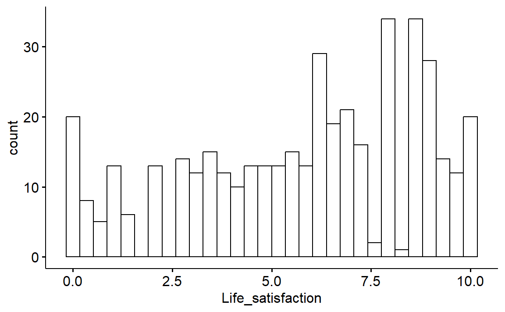
1.5.2 Mit DataExplorer
oecd |>
select(Life_satisfaction) |>
plot_histogram()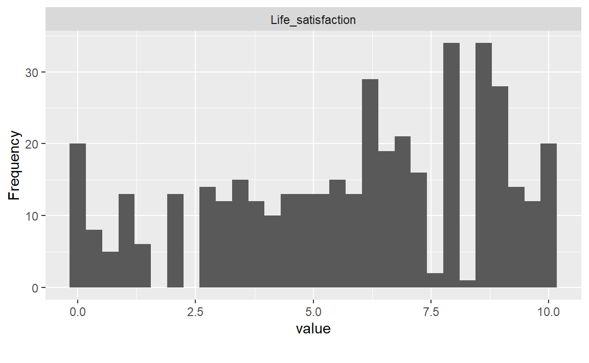
1.5.3 Mit ggplot
Das R-Paket ggplot wird durch das “Meta-Paket” tidyverse gestartet. Sie müssen es also nicht extra starten.
oecd %>%
ggplot(aes(x = Life_satisfaction)) +
geom_histogram()Eine ähnliche Aussage liefert das Dichte-Diagramm:
oecd %>%
ggplot(aes(x = Life_satisfaction)) +
geom_density()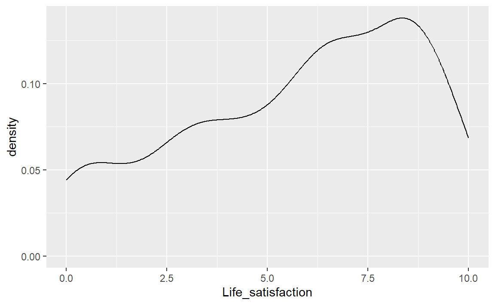
Die Dichte gibt an, welcher Anteil der Beobachtungen an der jeweiligen Stelle der X-Achse lägen, wenn man eine Einheit betrachtet (z.B. die Lebenszufriedenheit von 5-6).
1.6 Histogramm nach Gruppen: Lebenszufriedenheit in De und Fr
Angenommen, man möchte Deutschland mit Frankreich vergleichen im Hinblick auf die Lebenszufriedenheit.
Zunächst filtern wir den OECD-Datensatz, so dass nur die beiden genannten Länder enthalten bleiben:
oecd_de_fr <-
oecd %>%
filter(Country == "Germany" | Country == "France") Dann visualisieren wir wieder.
1.6.1 Mit ggpubr
oecd_de_fr |>
gghistogram(x = "Life_satisfaction", facet.by = "Country")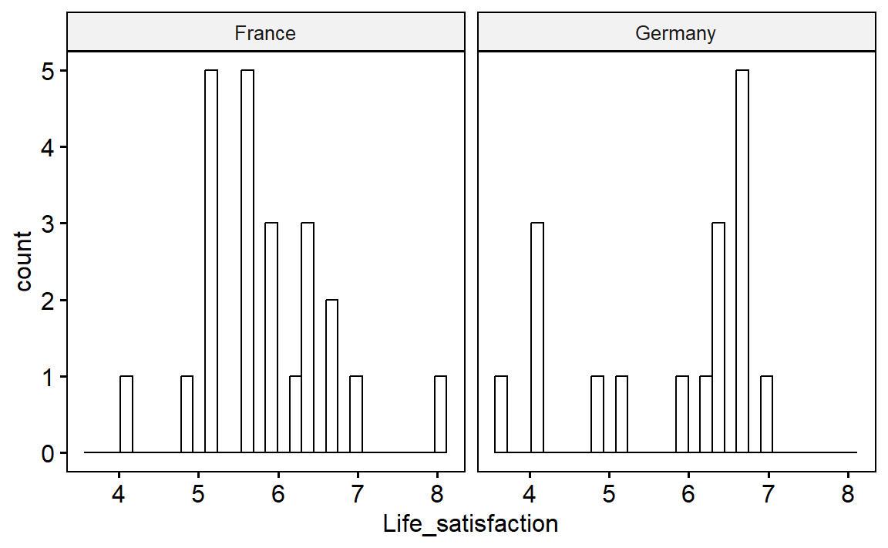
1.6.2 Mit DataExplorer
Leider unterstützt DataExplorer nicht direkt den Vergleich von Grupen mit einem Histogramm. Man könnte aber einen Boxplot verwenden stattdessen.
oecd_de_fr |>
select(Life_satisfaction, Country) |>
plot_boxplot(by = "Country")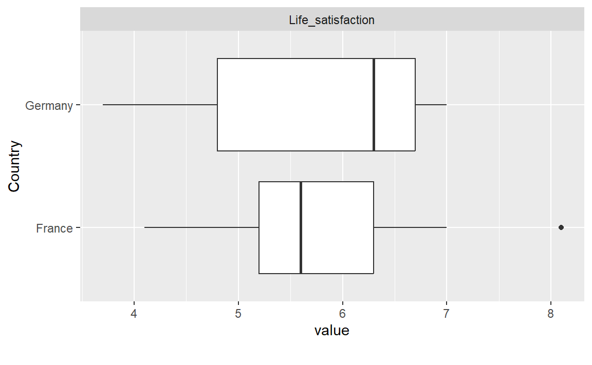
1.6.3 Mit ggplot
oecd_de_fr %>%
ggplot(aes(x = Life_satisfaction)) +
geom_histogram(bins = 15) +
facet_wrap(~ Country)
1.7 Histogramm für alle metrischen Variablen auf einmal
Um einen Überblick über die Verteilungen zu bekommen, bietet es sich an, sich alle Verteilungen anzuschauen. Malen wir einmal alle Histogramme auf einmal. Das geht wiederum mit DataExplorer sehr einfach:
oecd |>
plot_histogram()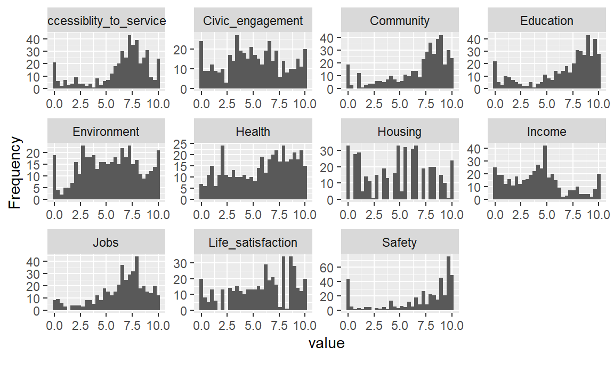
1.8 VERTIEFUNG: Histogramm für alle Variablen auf kompliziert
Note
Dieser Abschnitt ist eine Vertiefung; Sie können in überspringen, ohne den Anschluss zu den folgenden Abschnitten zu verlieren. \(\square\)
Als erstes erzeugen wir einen langen Dataframe (der nur aus metrischen Variablen besteht):
oecd_de_fr %>%
select(where(is.numeric)) %>% # wähle alle Spalten aus, wo sich Nummern finden
pivot_longer(everything()) %>% # baue alle Variablen in ein langes Format um
slice(1:10) # zeige die Zeilen 1 bis 10| name | value |
|---|---|
| Education | 7.8 |
| Jobs | 6.0 |
| Income | 6.3 |
| Safety | 8.6 |
| Health | 10.0 |
| Environment | 3.5 |
| Civic_engagement | 7.4 |
| Accessiblity_to_services | 8.6 |
| Housing | 3.3 |
| Community | 7.9 |
Dann plotten wir Histogramme, wobei wir nach den Ländern (key) gruppieren. Aber zuerst speichern wir uns den “langen” Datensatz ab:
oecd_de_fr_long <-
oecd_de_fr %>%
select(where(is.numeric)) %>% # wähle alle Spalten aus, wo sich Nummern finden
pivot_longer(everything()) Betrachten Sie diesen Daten einmal zur Übung.
Dann plotten wir in gewohnter Manier:
oecd_de_fr_long %>%
ggplot(aes(x = value)) +
geom_histogram() +
facet_wrap(~ name)
2 Forschungsfrage: Lebenszufriedenheit in De im internationalen Vergleich
2.1 Hintergrund
Hat Deutschland in Vergleich zu anderen Ländern eine hohe Lebenszufriedenheit?
Die Frage ist noch recht unpräzise formuliert, aber dafür gibt sie Raum für eine Menge von Untersuchungsansätzen.
2.1.1 Datensatz filtern - nur Länder, keine Landesteile
Der Datensatz in seiner aktuellen Form verstößt gegen die Regel der “Normalform”, dass in jeder Zeile (genau) eine Beobachtungseinheit steht und in jeder Zeile (genau) eine Variable. In einigen Zeilen stehen Länder, in den meisten anderen aber Landesteile (wie Bayern, Baden-Württemberg etc.). Filtern wir uns nur die Länder, und exkdluieren die Landesteile:
oecd_short <-
filter(oecd, region_type == "country_whole") Die Anzahl der Zeilen dieses Datensatz oecd_short gibt uns Aufschluss über die Anzahl der untersuchten Länder.
2.1.2 Visualisierung der Lebenszufriedenheit der Länder
2.1.2.1 Mit DataExplorer
oecd_short |>
select(Country, Life_satisfaction) |>
plot_scatterplot(by = "Life_satisfaction")2.1.2.2 Mit ggplot
oecd_short %>%
ggplot(aes(x = Country, y = Life_satisfaction)) +
geom_point()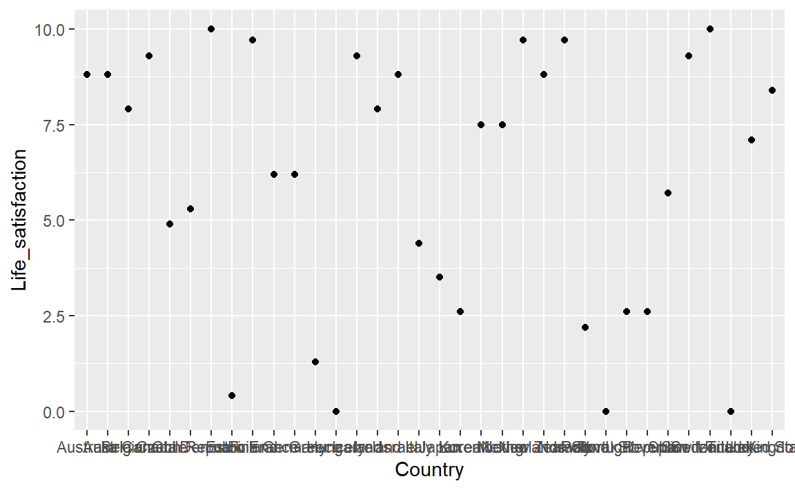
2.1.2.3 Sieht nicht so schön aus
Hm, unser Punktediagramm sieht nicht übersichtlich aus. Besser wäre es, die Punkte absteigend zu sortieren.
Betrachten wir dazu die Variable country näher: Es handelt sich um eine Character-Variable:
str(oecd)
#> 'data.frame': 429 obs. of 15 variables:
#> $ Country : chr "Australia" "Australia" "Australia" "Australia" ...
#> $ Region : chr "New South Wales" "Victoria" "Queensland" "South Australia" ...
#> $ region_type : chr "country_part" "country_part" "country_part" "country_part" ...
#> $ Code : chr "AU1" "AU2" "AU3" "AU4" ...
#> $ Education : num 8 8.1 7.8 7.3 7.6 6.5 8.1 9.5 8.8 8.5 ...
#> $ Jobs : num 8.1 7.9 8.1 7.8 8.8 7.6 8.7 9.3 7.8 8.2 ...
#> $ Income : num 6.8 5.9 6.3 6.1 7.9 5.4 8.2 10 5.7 5.9 ...
#> $ Safety : num 8.8 9.5 9.5 9 8.6 8.8 0 10 9.7 9.8 ...
#> $ Health : num 9 9.5 8.3 8.5 9.3 5.4 2.4 9.3 6.7 6.6 ...
#> $ Environment : num 9.8 8.6 9.9 9.4 9.6 10 9.2 9.1 3.5 2.6 ...
#> $ Civic_engagement : num 10 10 10 10 10 10 8.4 10 8.6 8.1 ...
#> $ Accessiblity_to_services: num 7.2 7.5 7.7 7.2 7.8 6.8 7.8 8.7 8 7.4 ...
#> $ Housing : num 7.2 7.8 8.3 8.3 8.9 8.3 5.6 8.3 6.1 5.6 ...
#> $ Community : num 8.9 9.3 8.6 8.6 8.5 8.6 10 9.8 8.3 7.8 ...
#> $ Life_satisfaction : num 7.8 8.5 8.1 8.5 7.8 9.6 7 9.6 7.8 8.1 ...Eine Variable des Typs character steht für Text, z.B. "Germany".
Offensichtlich sind diese alphabetisch geordnet – nach dieser Ordnung richtet sich die Ordnung im Diagramm.
2.1.3 Umwandling in eine Faktor-Variable
In solchen Fällen bietet es sich an, die Character-Variable in eine Factor-Variable umzuwandeln; dann geht das Weitere einfacher.
oecd_short <-
oecd_short %>%
mutate(Country = factor(Country))Übrigens: Möchte man wissen, wie viele unterschiedliche Werte eine Variable enthält, dann kann die Funktion distinct() verwenden:
oecd_short %>%
distinct(Country)| Country |
|---|
| Australia |
| Austria |
| Belgium |
| Canada |
| Chile |
| Czech Republic |
| Denmark |
| Estonia |
| Finland |
| France |
| Germany |
| Greece |
| Hungary |
| Iceland |
| Ireland |
| Israel |
| Italy |
| Japan |
| Korea |
| Luxembourg |
| Mexico |
| Netherlands |
| New Zealand |
| Norway |
| Poland |
| Portugal |
| Slovak Republic |
| Slovenia |
| Spain |
| Sweden |
| Switzerland |
| Turkey |
| United Kingdom |
| United States |
2.2 Ranking und Top-10-Prozent der Zufriedenheit
2.2.1 Top-10
Schauen wir uns die “Happy-Top-10” an, die 10 Länder mit der höchsten Lebenszufriedenheit:
oecd_short %>%
arrange(-Life_satisfaction) %>% # absteigend sortieren
select(Country, Life_satisfaction) %>%
slice(1:10)| Country | Life_satisfaction |
|---|---|
| Denmark | 10.0 |
| Switzerland | 10.0 |
| Finland | 9.7 |
| Netherlands | 9.7 |
| Norway | 9.7 |
| Canada | 9.3 |
| Iceland | 9.3 |
| Sweden | 9.3 |
| Australia | 8.8 |
| Austria | 8.8 |
2.2.2 Die oberen 10% der Zufriedenheit
Mit welcher Lebenszufriedenheit gehört ein Land zu den Top-10-Prozent der zufriedenen Länder?
oecd_short %>%
summarise(quantile(Life_satisfaction, probs = .90))| quantile(Life_satisfaction, probs = 0.9) |
|---|
| 9.7 |
Ah, Länder mit einer Lebenszufriedenheit von mind. 9.7 gehören zu den oberen Top-10-Prozent. Filtern wir mal entsprechend:
oecd_short %>%
filter(Life_satisfaction >= 9.7) %>%
select(Country, Life_satisfaction)| Country | Life_satisfaction |
|---|---|
| Denmark | 10.0 |
| Finland | 9.7 |
| Netherlands | 9.7 |
| Norway | 9.7 |
| Switzerland | 10.0 |
2.3 Vertiefung
Ändern wir die Sortierung! Mit reorder() kann man die Sortierung ändern (re-ordnen, daher der Name):
oecd_short_reordered <-
oecd_short %>%
mutate(Country_sorted = reorder(Country, Life_satisfaction)) Ist das jetzt geordnet? str() (wie structure) verrät es uns:
str(oecd_short_reordered)
#> 'data.frame': 34 obs. of 16 variables:
#> $ Country : Factor w/ 34 levels "Australia","Austria",..: 1 2 3 4 5 6 7 8 9 10 ...
#> $ Region : chr "Australia" "Austria" "Belgium" "Canada" ...
#> $ region_type : chr "country_whole" "country_whole" "country_whole" "country_whole" ...
#> $ Code : chr "AUS" "AUT" "BEL" "CAN" ...
#> $ Education : num 7.6 8.4 7.5 9.2 7.2 10 6.7 9.6 8.7 7.6 ...
#> $ Jobs : num 7.9 7.7 5 6.6 6.2 7.3 7.9 6.6 6.4 5.2 ...
#> $ Income : num 9.5 7.9 6.2 7.4 0.4 2.8 5.1 1 5.6 7 ...
#> $ Safety : num 8.4 10 5.7 6.5 0.6 6.1 10 0 10 8.4 ...
#> $ Health : num 9 7.2 6.6 8.5 4.2 2.7 5.8 2.1 7.3 9.3 ...
#> $ Environment : num 9.7 2.8 1.9 7.4 8.5 1.4 5.8 6.4 7.9 4.5 ...
#> $ Civic_engagement : num 10 6.2 9.7 4.7 0.1 2.6 8.9 3.7 4.8 7.5 ...
#> $ Accessiblity_to_services: num 6.9 7.2 7.6 8.1 0 6.7 8.3 7.6 9 6.9 ...
#> $ Housing : num 9.5 5.1 8.8 10 1.5 2.9 6.6 1.5 6.6 5.1 ...
#> $ Community : num 8.8 7.6 7.7 8.5 2.5 5.1 9.6 4.6 8.7 7.6 ...
#> $ Life_satisfaction : num 8.8 8.8 7.9 9.3 4.9 5.3 10 0.4 9.7 6.2 ...
#> $ Country_sorted : Factor w/ 34 levels "Hungary","Portugal",..: 23 24 20 27 12 13 33 4 30 15 ...
#> ..- attr(*, "scores")= num [1:34(1d)] 8.8 8.8 7.9 9.3 4.9 5.3 10 0.4 9.7 6.2 ...
#> .. ..- attr(*, "dimnames")=List of 1
#> .. .. ..$ : chr [1:34] "Australia" "Austria" "Belgium" "Canada" ...Wie man sieht, ist Country_sorted jetzt anders sortiert.
Visualisieren wir das Ergebnis:
2.3.1 Mit DataExplorer
oecd_short_reordered |>
select(Country_sorted, Life_satisfaction) |>
plot_scatterplot(by = "Life_satisfaction")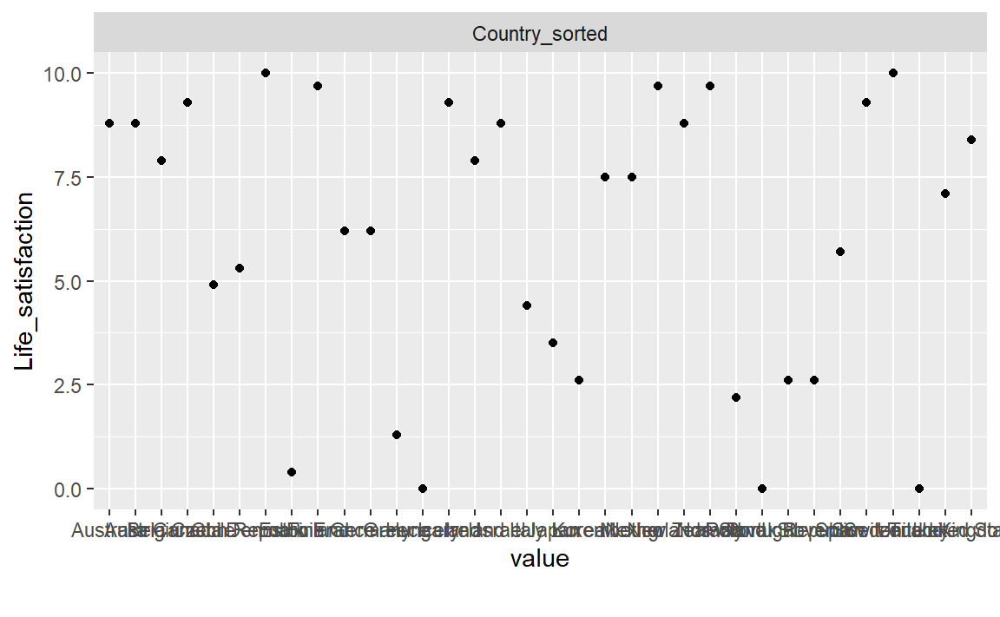
Oh, DataExplorer macht die Reihenfolge wieder kaputt.
2.3.2 Mit ggpubr
oecd_short_reordered |>
ggscatter(x = "Country_sorted",
y = "Life_satisfaction")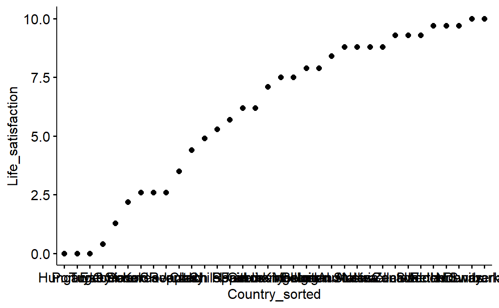
2.3.3 Mit ggplot
plot_sorted <- oecd_short_reordered %>%
ggplot(aes(x = Country_sorted, y = Life_satisfaction)) +
geom_point()
plot_sorted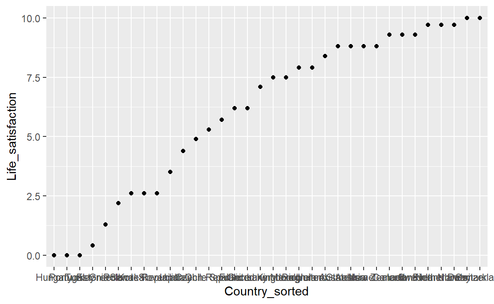
Schon besser. Man kann z.B. die Achsen nicht lesen 😿. Was könnte man da bloß tun?
2.3.4 Achsenu um 90 Grad drehen
Mit + coord_flip() lassen sich die Achsen um 90 Grad drehen:
plot_sorted + coord_flip()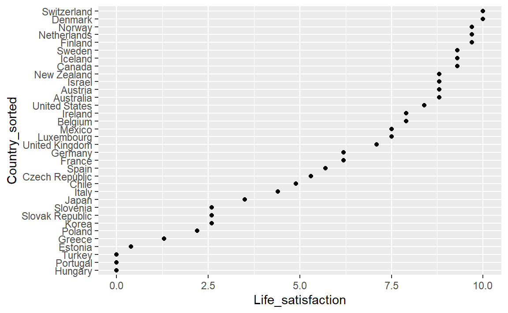
Schön 😄.
Man hätte das Sortieren und Achsen drehen auch in einem Haps machen können:
oecd_short_reordered %>%
ggplot(aes(x = Country_sorted, y = Life_satisfaction)) +
geom_point() + coord_flip()
Aber übersichtlicher ist es, die Dinge nacheinander zu tun.
2.3.5 Mittelwert ins Diagramm
Schön wäre es noch, im Bild den Mittelwert o.Ä. im Diagramm zu sehen:
oecd_short_reordered %>%
ggplot(aes(x = Country_sorted, y = Life_satisfaction)) +
geom_point() +
geom_hline(yintercept = 6.08, data = NA, color = "firebrick") +
coord_flip()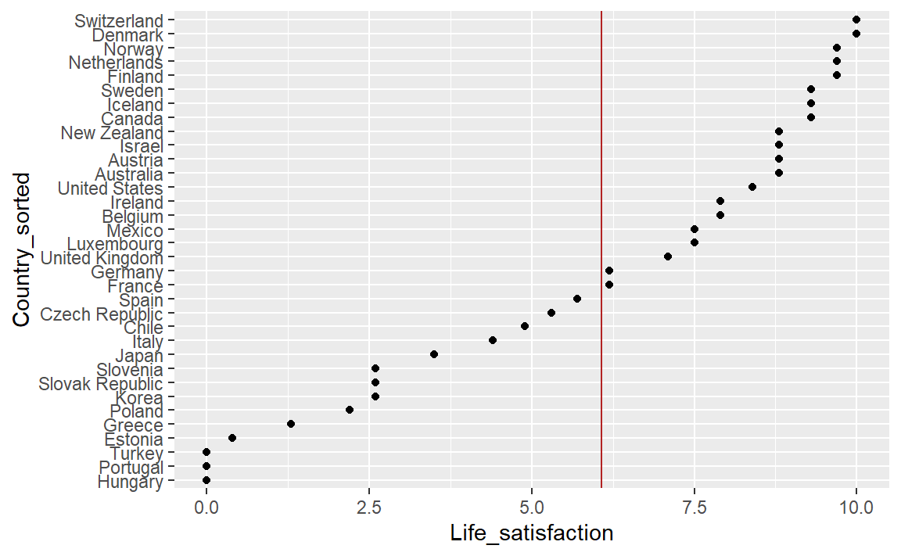
Tja, die Wünsche hören nie auf… Wäre es nicht noch nett, wenn “Deutschland” hervorgehoben wäre, optisch, so dass es im Diagramm hervorsticht. Nehmen wir an, wir sind an diesem Land besonders interessiert.
oecd_short_reordered <-
oecd_short_reordered %>%
mutate(is_Germany = Country == "Germany")Damit haben wir eine Spalte erstellt, die angibt, ob ein Land Deutschland ist (TRUE) oder nicht (FALSE). Diese neue Variable nehmen wir her, um die Farbe, Größe und Form der Punkte zu bestimmen:
oecd_short_reordered %>%
ggplot(aes(x = Country_sorted, y = Life_satisfaction)) +
geom_point(aes(color = is_Germany, shape = is_Germany, size = is_Germany)) +
geom_hline(yintercept = 6.08, data = NA, color = "firebrick") +
geom_hline(yintercept = 6.08, data = NA, color = "grey60") %>%
geom_vline(xintercept = 16, data = NA, color = "grey80") +
coord_flip()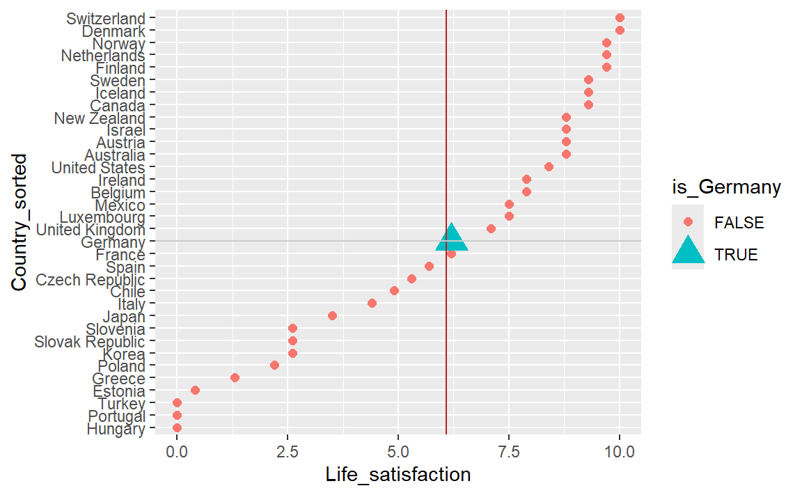
2.4 Zusammenhang zweier metrischer Variablen – Punktediagramm
Hängt die Lebenszufriedenheit mit Civic_engagment zusammen?
Visualisieren wir diesen (möglichen) Zusammenhang.
2.4.1 Mit ggpubr
oecd_short_reordered |>
ggscatter(x = "Civic_engagement",
y = "Life_satisfaction")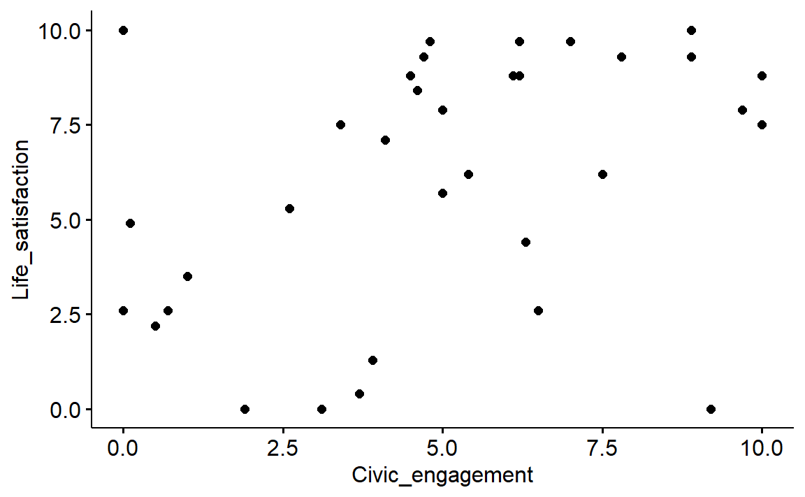
2.4.2 Mit DataExplorer
oecd_short_reordered |>
select(Civic_engagement, Life_satisfaction) |>
plot_scatterplot(by = "Life_satisfaction")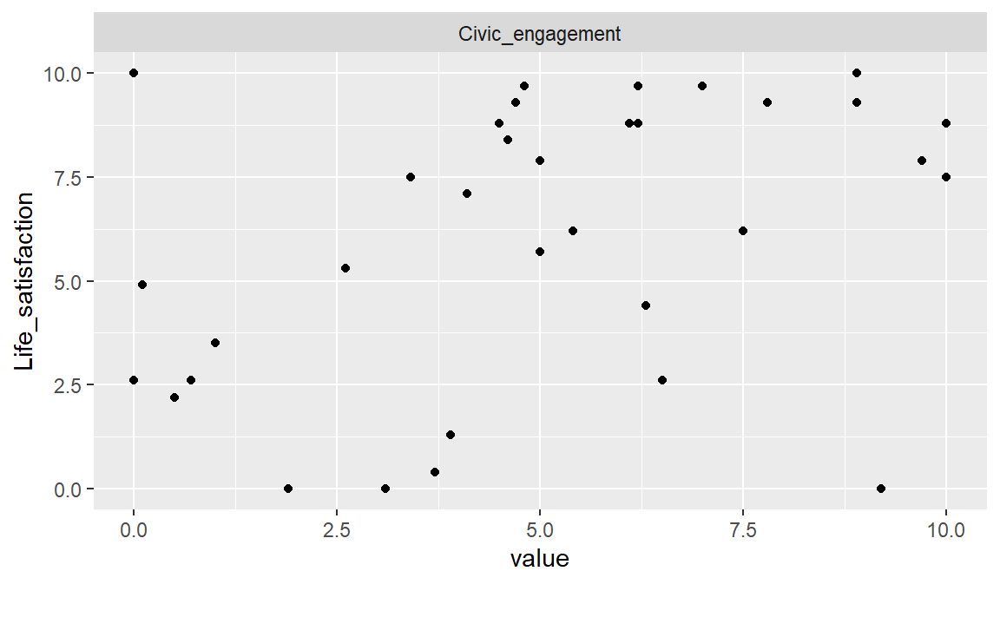
DataExplorer bietet den Vorteil, dass man einfach überprüfen kann, ob irgendeine Variable mit Lebenszufriedenheit zusammenhängt:
oecd_short_reordered |>
#select(Civic_engagement, Life_satisfaction) |>
plot_scatterplot(by = "Life_satisfaction")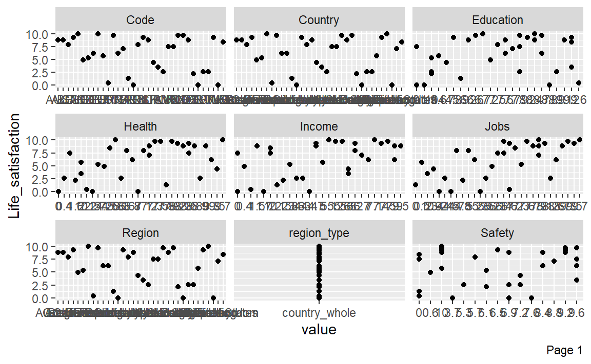
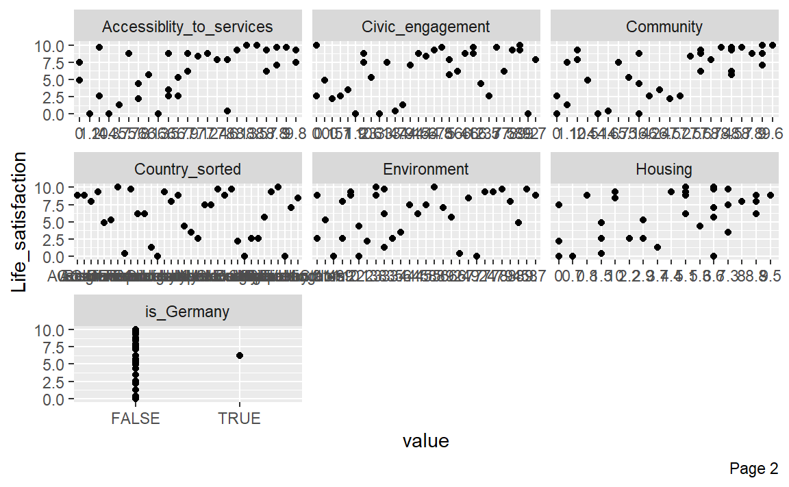
2.4.3 Mit ggplot
oecd_short_reordered %>%
ggplot(aes(x = Civic_engagement, y = Life_satisfaction)) +
geom_point()2.4.4 Insgesamt wenig Zusammenhang
Hm, es ist kein starker Trend zu erkennen.
Was sagt die Korrelation dazu:
oecd_short_reordered %>%
summarise(cor_ce_ls = cor(Civic_engagement, Life_satisfaction))| cor_ce_ls |
|---|
| 0.4021292 |
Immerhin, kein ganz unwesentlicher Wert.
2.4.5 Und so weiter
Dieses Prinzip mit dem Punktediagramm könnte man jetzt weiterführen ad nauseam.
2.4.6 Korrelationsdiagramm
oecd_short_reordered |>
plot_correlation()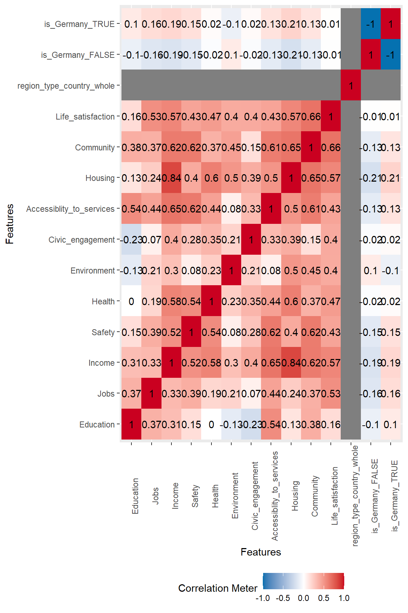
2.5 Zusammenhang zweier Variablen unter Berücksichtigung von Drittvariablen
Oben haben wir gesehen, dass Lebenszufriedenheit und Civiv Engagement zusammenhängen (zumindest ein bisschen).
Aber vielleicht hängt dieser Zusammenhang wiederum von der finanziellen Absicherung ab? Nur wenn man materiell abgesichert ist, so könnte man argumentieren, wird bürgerliches Engagement (bzw. die Möglichkeit zu) eine Einflussgröße auf die Lebenszufriedenheit.
Anders gesagt: Man könnte behaupten, der Zusammenahng von Lebenszufriedenheit und Civiv Engagement ist abhängig von einer dritten Variable, dem Einkommen.
Um diese Frage zu untersuchen, teilen wir Income in zwei Stufen, hoch und gering. Dann untersuchen wir jeweils den Zusammenhang von Lebenszufriedenheit und bürgerlichem Engagement.
Achtung! Eine metrische Variablen in zwei Hälften zu spalten birgt einen hohen Informationsverlust. Da wir aber nur eine grobe Untersuchung vorhaben (und uns noch nicht fortgeschrittener Technik bedienen wollen), bleiben wir erstmal bei dieser sog. Dichotomisierung.
Nehmen wir den Median des Einkommen als Teilungspunkt; man spricht von einem “Mediansplit”:
oecd_short %>%
summarise(Income_md = median(Income))| Income_md |
|---|
| 5.15 |
Zuerst erstellen wir eine Variable Income_high mit den Stufen 0 (nein) und 1 (ja):
oecd_short_reordered <-
oecd_short_reordered %>%
mutate(Income_high =
case_when( Income >= median(Income) ~ 1,
Income < median(Income) ~ 0))2.5.1 Visualisierung
Jetzt plotten wir den Zusammenhang:
2.5.1.1 Mit ggpubr
oecd_short_reordered |>
ggscatter(y = "Country_sorted",
x = "Life_satisfaction",
facet.by = "Income_high")2.5.1.2 Mit ggplot
income_labels <- c(`0` = "arm",
`1` ="reich")
oecd_short_reordered %>%
ggplot(aes(x = Country_sorted, y = Life_satisfaction)) +
geom_point() +
facet_wrap(~ Income_high,
labeller = labeller(Income_high = income_labels)) +
coord_flip() +
labs(y = "Länder",
x = "Lebenszufriedenheit",
title = "Lebenszufriedenheit in armen und reichen Ländern ") +
theme_minimal()2.5.2 Vertiefung: Korrelation pro Gruppe
Um die Korrelation pro Gruppe zu erhalten, könnten wir jeweils einen Dataframe pro Gruppe erzeugen (mit filter()) und dann jeweils die Korrelation von Zufriedenheit und Engagement berechnen.
Eine andere, etwas elegantere Möglichkeit kann so aussehen:
oecd_short_reordered %>%
group_by(Income_high) %>%
summarise(cor_zuf_eng = cor(Life_satisfaction, Civic_engagement))| Income_high | cor_zuf_eng |
|---|---|
| 0 | 0.3667677 |
| 1 | 0.1395726 |
Interessanterweise ist die Korrelation durchaus verschieden in den beiden Gruppen.
Natürlich sind die beiden Gruppen nur Stichproben - es stellt sich die Frage, ob die Unterschiede nur durch Zufälligkeiten des Stichprobenziehens entstanden sind oder auch in der Grundgesatmtheit der “reichen” und “armen” Ländern existieren? Dazu später mehr!
2.6 Deskriptive Statistiken nach Ländern
2.6.1 Lebenszufriedenheit
2.6.1.1 Mit easystats
Das ist relativ einfach:
oecd_short_reordered %>%
select(Life_satisfaction) %>%
describe_distribution()| Variable | Mean | SD | IQR | Min | Max | Skewness | Kurtosis | n | n_Missing |
|---|---|---|---|---|---|---|---|---|---|
| Life_satisfaction | 6.070588 | 3.379396 | 6.325 | 0 | 10 | -0.575841 | -1.078514 | 34 | 0 |
2.6.1.2 Mit tidyverse
oecd_short_reordered %>%
summarise(satis_mean = mean(Life_satisfaction),
satis_median = median(Life_satisfaction),
satis_sd = sd(Life_satisfaction),
satis_iqr = IQR(Life_satisfaction))| satis_mean | satis_median | satis_sd | satis_iqr |
|---|---|---|---|
| 6.070588 | 7.3 | 3.379396 | 5.975 |
3 Reproducibility
#> ─ Session info ───────────────────────────────────────────────────────────────────────────────────────────────────────
#> setting value
#> version R version 4.5.1 (2025-06-13)
#> os Ubuntu 25.10
#> system x86_64, linux-gnu
#> ui X11
#> language (EN)
#> collate de_DE.UTF-8
#> ctype de_DE.UTF-8
#> tz Europe/Berlin
#> date 2025-11-22
#> pandoc 3.6.3 @ /snap/rstudio/25/resources/app/bin/quarto/bin/tools/x86_64/ (via rmarkdown)
#> quarto 1.7.32 @ /snap/rstudio/25/resources/app/bin/quarto/bin/quarto
#>
#> ─ Packages ───────────────────────────────────────────────────────────────────────────────────────────────────────────
#> package * version date (UTC) lib source
#> abind 1.4-8 2024-09-12 [3] CRAN (R 4.4.1)
#> assertthat 0.2.1 2019-03-21 [3] CRAN (R 4.0.1)
#> backports 1.5.0 2024-05-23 [3] CRAN (R 4.4.1)
#> bayestestR * 0.17.0 2025-08-29 [1] RSPM (R 4.5.1)
#> broom 1.0.10 2025-09-13 [1] RSPM
#> cachem 1.1.0 2024-05-16 [3] CRAN (R 4.4.2)
#> car 3.1-3 2024-09-27 [3] CRAN (R 4.4.1)
#> carData 3.0-5 2022-01-06 [3] CRAN (R 4.1.2)
#> cli 3.6.5 2025-04-23 [1] CRAN (R 4.5.1)
#> coda 0.19-4.1 2024-01-31 [1] RSPM
#> codetools 0.2-20 2024-03-31 [4] CRAN (R 4.3.3)
#> correlation * 0.8.8 2025-07-08 [1] RSPM (R 4.5.1)
#> crayon 1.5.3 2024-06-20 [3] CRAN (R 4.4.2)
#> data.table 1.17.8 2025-07-10 [1] RSPM (R 4.5.1)
#> data.tree 1.2.0 2025-08-25 [1] CRAN (R 4.5.1)
#> DataExplorer * 0.8.4 2025-07-25 [1] CRAN (R 4.5.1)
#> datawizard * 1.3.0 2025-10-11 [1] RSPM (R 4.5.1)
#> devtools 2.4.6 2025-10-03 [1] RSPM
#> dichromat 2.0-0.1 2022-05-02 [3] CRAN (R 4.2.0)
#> digest 0.6.39 2025-11-19 [1] CRAN (R 4.5.1)
#> dplyr * 1.1.4 2023-11-17 [3] CRAN (R 4.4.2)
#> easystats * 0.7.5 2025-07-11 [1] RSPM (R 4.5.1)
#> effectsize * 1.0.1 2025-05-27 [1] RSPM (R 4.5.1)
#> ellipsis 0.3.2 2021-04-29 [3] CRAN (R 4.1.1)
#> emmeans 1.10.7 2025-01-31 [3] CRAN (R 4.4.2)
#> emo 0.0.0.9000 2025-11-22 [1] Github (hadley/emo@3f03b11)
#> estimability 1.5.1 2024-05-12 [3] CRAN (R 4.4.2)
#> evaluate 1.0.5 2025-08-27 [1] CRAN (R 4.5.1)
#> farver 2.1.2 2024-05-13 [3] CRAN (R 4.4.1)
#> fastmap 1.2.0 2024-05-15 [3] CRAN (R 4.4.1)
#> fontBitstreamVera 0.1.1 2017-02-01 [3] CRAN (R 4.4.2)
#> fontLiberation 0.1.0 2016-10-15 [3] CRAN (R 4.4.2)
#> fontquiver 0.2.1 2017-02-01 [3] CRAN (R 4.3.1)
#> forcats * 1.0.0 2023-01-29 [3] CRAN (R 4.2.2)
#> Formula 1.2-5 2023-02-24 [3] CRAN (R 4.2.2)
#> fs 1.6.6 2025-04-12 [1] CRAN (R 4.5.1)
#> gdtools 0.4.4 2025-10-06 [1] CRAN (R 4.5.1)
#> generics 0.1.4 2025-05-09 [1] CRAN (R 4.5.1)
#> ggformula * 1.0.0 2025-10-06 [1] CRAN (R 4.5.1)
#> ggiraph 0.9.2 2025-10-07 [1] CRAN (R 4.5.1)
#> ggplot2 * 4.0.1 2025-11-14 [1] RSPM (R 4.5.1)
#> ggpubr * 0.6.2 2025-10-17 [1] RSPM
#> ggridges 0.5.6 2024-01-23 [3] CRAN (R 4.3.2)
#> ggsignif 0.6.4 2022-10-13 [3] CRAN (R 4.2.2)
#> glue 1.8.0 2024-09-30 [3] CRAN (R 4.4.2)
#> gridExtra 2.3 2017-09-09 [3] CRAN (R 4.0.1)
#> gtable 0.3.6 2024-10-25 [3] CRAN (R 4.4.2)
#> haven 2.5.5 2025-05-30 [3] CRAN (R 4.5.0)
#> hms 1.1.3 2023-03-21 [3] CRAN (R 4.3.1)
#> htmltools 0.5.8.1 2024-04-04 [3] CRAN (R 4.4.0)
#> htmlwidgets 1.6.4 2023-12-06 [3] CRAN (R 4.3.2)
#> igraph 2.1.4 2025-01-23 [3] CRAN (R 4.5.0)
#> insight * 1.4.2 2025-09-02 [1] RSPM (R 4.5.1)
#> jsonlite 2.0.0 2025-03-27 [1] CRAN (R 4.5.1)
#> knitr 1.50 2025-03-16 [3] CRAN (R 4.4.3)
#> labeling 0.4.3 2023-08-29 [3] CRAN (R 4.3.1)
#> labelled 2.14.0 2025-01-08 [3] CRAN (R 4.4.2)
#> lattice * 0.22-7 2025-04-02 [4] CRAN (R 4.4.3)
#> lifecycle 1.0.4 2023-11-07 [3] CRAN (R 4.3.2)
#> lubridate * 1.9.4 2024-12-08 [3] CRAN (R 4.4.2)
#> magrittr 2.0.4 2025-09-12 [1] CRAN (R 4.5.1)
#> MASS 7.3-65 2025-02-28 [4] CRAN (R 4.4.3)
#> Matrix * 1.7-3 2025-03-11 [4] CRAN (R 4.4.3)
#> memoise 2.0.1 2021-11-26 [3] CRAN (R 4.1.2)
#> modelbased * 0.13.0 2025-08-30 [1] RSPM (R 4.5.1)
#> mosaic 1.9.2 2025-07-30 [1] CRAN (R 4.5.1)
#> mosaicCore 0.9.5 2025-07-30 [1] CRAN (R 4.5.1)
#> mosaicData * 0.20.4 2023-11-05 [1] CRAN (R 4.5.1)
#> multcomp 1.4-28 2025-01-29 [3] CRAN (R 4.4.2)
#> mvtnorm 1.3-3 2025-01-10 [1] RSPM
#> networkD3 0.4.1 2025-04-14 [1] CRAN (R 4.5.1)
#> parameters * 0.28.2 2025-09-10 [1] RSPM (R 4.5.1)
#> performance * 0.15.2 2025-10-06 [1] RSPM (R 4.5.1)
#> pillar 1.11.1 2025-09-17 [1] CRAN (R 4.5.1)
#> pkgbuild 1.4.8 2025-05-26 [1] CRAN (R 4.5.1)
#> pkgconfig 2.0.3 2019-09-22 [3] CRAN (R 4.0.1)
#> pkgload 1.4.1 2025-09-23 [1] CRAN (R 4.5.1)
#> plyr 1.8.9 2023-10-02 [3] CRAN (R 4.3.1)
#> purrr * 1.2.0 2025-11-04 [1] RSPM (R 4.5.1)
#> R6 2.6.1 2025-02-15 [3] CRAN (R 4.4.3)
#> RColorBrewer 1.1-3 2022-04-03 [3] CRAN (R 4.2.0)
#> Rcpp 1.1.0 2025-07-02 [3] CRAN (R 4.5.1)
#> readr * 2.1.6 2025-11-14 [1] RSPM
#> remotes 2.5.0 2024-03-17 [3] CRAN (R 4.4.1)
#> report * 0.6.2 2025-11-03 [1] RSPM (R 4.5.1)
#> reshape2 1.4.4 2020-04-09 [3] CRAN (R 4.0.1)
#> rlang 1.1.6 2025-04-11 [1] CRAN (R 4.5.1)
#> rmarkdown 2.30 2025-09-28 [1] RSPM (R 4.5.1)
#> rstatix 0.7.2 2023-02-01 [3] CRAN (R 4.2.2)
#> rstudioapi 0.17.1 2024-10-22 [3] CRAN (R 4.4.1)
#> S7 0.2.1 2025-11-14 [1] RSPM (R 4.5.1)
#> sandwich 3.1-1 2024-09-15 [3] CRAN (R 4.4.1)
#> scales 1.4.0 2025-04-24 [1] RSPM (R 4.5.1)
#> see * 0.12.0 2025-09-14 [1] RSPM (R 4.5.1)
#> sessioninfo 1.2.3 2025-02-05 [3] CRAN (R 4.4.3)
#> stringi 1.8.7 2025-03-27 [1] CRAN (R 4.5.1)
#> stringr * 1.6.0 2025-11-04 [1] CRAN (R 4.5.1)
#> survival 3.8-3 2024-12-17 [4] CRAN (R 4.4.2)
#> systemfonts 1.3.1 2025-10-01 [1] CRAN (R 4.5.1)
#> TH.data 1.1-3 2025-01-17 [3] CRAN (R 4.4.2)
#> tibble * 3.3.0 2025-06-08 [1] CRAN (R 4.5.1)
#> tidyr * 1.3.1 2024-01-24 [3] CRAN (R 4.3.2)
#> tidyselect 1.2.1 2024-03-11 [3] CRAN (R 4.4.0)
#> tidyverse * 2.0.0 2023-02-22 [3] CRAN (R 4.4.2)
#> timechange 0.3.0 2024-01-18 [3] CRAN (R 4.4.3)
#> tzdb 0.5.0 2025-03-15 [3] CRAN (R 4.4.3)
#> usethis 3.2.1 2025-09-06 [1] CRAN (R 4.5.1)
#> vctrs 0.6.5 2023-12-01 [3] CRAN (R 4.3.2)
#> withr 3.0.2 2024-10-28 [3] CRAN (R 4.4.1)
#> xfun 0.54 2025-10-30 [1] CRAN (R 4.5.1)
#> xtable 1.8-4 2019-04-21 [3] CRAN (R 4.0.1)
#> yaml 2.3.10 2024-07-26 [3] CRAN (R 4.4.1)
#> zoo 1.8-14 2025-04-10 [3] CRAN (R 4.4.3)
#>
#> [1] /home/sebastian-sauer/R/x86_64-pc-linux-gnu-library/4.5
#> [2] /usr/local/lib/R/site-library
#> [3] /usr/lib/R/site-library
#> [4] /usr/lib/R/library
#> * ── Packages attached to the search path.
#>
#> ──────────────────────────────────────────────────────────────────────────────────────────────────────────────────────